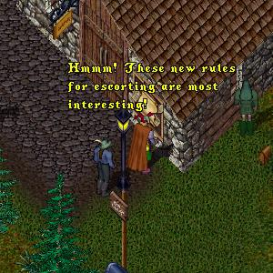
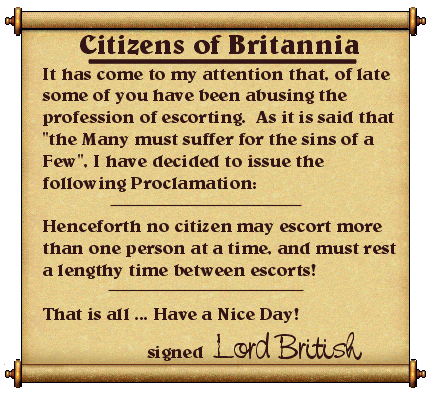
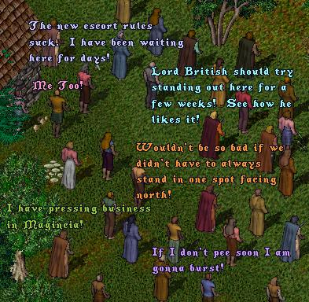
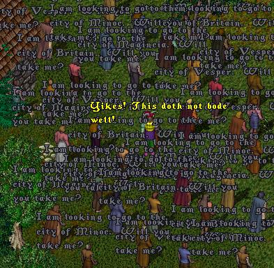
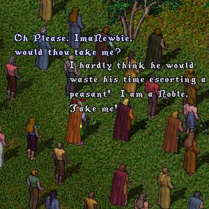
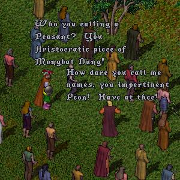
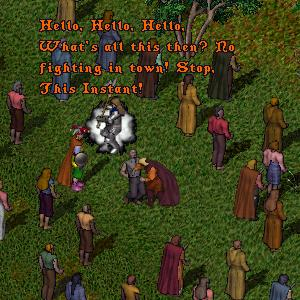
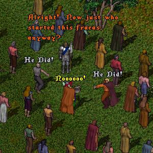
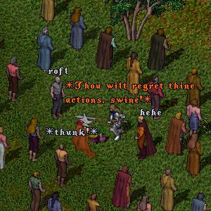
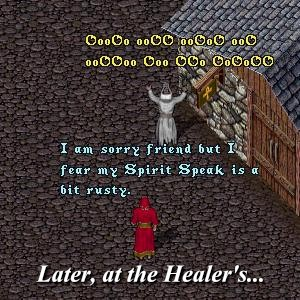

As this episode opens we find ImaNewbie at the bulletin board
in Occlo, reading Lord British's latest edict.
 |
 |
Meanwhile at a popular "Waiting Spot" for escort services on Occlo,
the npcs are chatting about the new escorting rules.
 |
ImaNewbie, thinking that with the new "one per escort" rule there
may actually BE someone to escort for a change, proceeds to
the waiting spot and bravely shouts out "Destination".
 |
 |
 |
Hearing the brawl taking place, one of Britannia's famous
"Terminator" Guards bursts on to the scene.
 |
 |
 |
This last frame is anit-climactic and totally unnecessary but I
threw it in anyway for you viewers who are not satisfied with
merely seeing Ima blindsided by a Guard's halberd, but must
also see him utter the immortal words...
 |